- javaweb
javaweb
概述：
Java Web，是用Java技术来解决相关web互联网领域的技术总和。web包括：web服务器和web客户端两部分。Java在客户端的应用有java applet，不过使用得很少，Java在服务器端的应用非常的丰富，比如Servlet，JSP和第三方框架等等。Java技术对Web领域的发展注入了强大的动力。
Java的Web框架虽然各不相同，但基本也都是遵循特定的路数的：使用Servlet或者Filter拦截请求，使用MVC的思想设计架构，使用约定，XML或 Annotation实现配置，运用Java面向对象的特点，面向对象实现请求和响应的流程，支持Jsp，Freemarker，Velocity等视图。
javaBean
javabean是一种带有特定写法的java类。
具有一些规范：
①：公共无参构造方法
②: 私有类型属性
③：公共类型属性的getter / setter 方法
④：Javabean应该直接或间接实现 java.io.Serializable 接口，以支持序列化接口。
建议javabean 属性的命名 使用驼峰命名法。
驼峰命名法：
第一个单词首字母小写，之后每个单词的首字母大写。例如：userName,myFirstName 等
jsp
1.概述：
JSP全名为Java Server Pages，中文名叫java服务器页面，其根本是一个简化的Servlet设计.它是一种动态网页技术标准。JSP技术有点类似ASP技术，它是在传统的网页HTML文件中插入Java程序段和JSP标记(tag)，从而形成JSP文件，后缀名为(*.jsp)。
- 它使用JSP标签在HTML网页中插入Java代码。标签通常以<%开头以%>结束。
- JSP通过网页表单获取用户输入数据、访问数据库及其他数据源，然后动态地创建网页。
- JSP标签有多种功能，比如访问数据库、记录用户选择信息、访问JavaBeans组件等，还可以在不同的网页中传递控制信息和共享信息。
2.jsp原理及使用：
1.jsp容器：
网络服务器需要一个JSP引擎，也就是一个容器来处理JSP页面。容器负责截获对JSP页面的请求。
本教程使用内嵌JSP容器的Apache来支持JSP开发。
JSP容器与Web服务器协同合作，为JSP的正常运行提供必要的运行环境和其他服务，并且能够正确识别专属于JSP网页的特殊元素。
下图显示了JSP容器和JSP文件在Web应用中所处的位置。
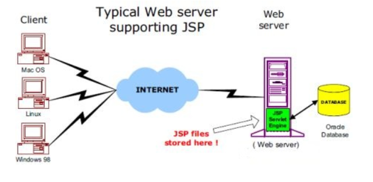
2.jsp的处理：
以下步骤表明了Web服务器是如何使用JSP来创建网页的：
- 就像其他普通的网页一样，您的浏览器发送一个HTTP请求给服务器。
- Web服务器识别出这是一个对JSP网页的请求，并且将该请求传递给内部的JSP引擎。通过使用URL或者.jsp文件来完成。
- JSP引擎从磁盘中载入JSP文件，然后将它们转化为servlet。这种转化只是简单地将所有模板文本改用println()语句，并且将所有的JSP元素转化成Java代码。
- JSP引擎将servlet编译成可执行类，并且将原始请求传递给servlet引擎。
- Web服务器的某组件将会调用servlet引擎，然后载入并执行servlet类。在执行过程中，servlet产生HTML格式的输出并将其内嵌于HTTP response中上交给Web服务器。
- Web服务器以静态HTML网页的形式将HTTP response返回到您的浏览器中。
- 最终，Web浏览器处理HTTP response中动态产生的HTML网页，就好像在处理静态网页一样。
以上提及到的步骤可以用下图来表示：
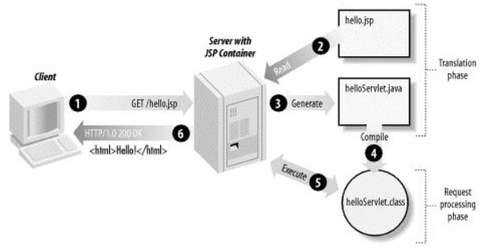
3.jsp生命周期：
JSP生命周期就是从创建到销毁的整个过程，类似于servlet生命周期，区别在于JSP生命周期还包括将JSP文件编译成servlet。
以下是JSP生命周期中所走过的几个阶段：
- 编译阶段：
servlet容器编译servlet源文件，生成servlet类 - 初始化阶段：
加载与JSP对应的servlet类，创建其实例，并调用它的初始化方法 - 执行阶段：
调用与JSP对应的servlet实例的服务方法 - 销毁阶段：
调用与JSP对应的servlet实例的销毁方法，然后销毁servlet实例.
JSP初始化：
容器载入JSP文件后，它会在为请求提供任何服务前调用jspInit()方法。如果您需要执行自定义的JSP初始化任务，复写jspInit()方法就行了，就像下面这样：
public void jspInit(){ // 初始化代码 }
通常情况下您可以在jspInit()方法中初始化数据库连接、打开文件和查询数据表。
JSP销毁：
JSP生命周期的销毁阶段描述了当一个JSP网页从容器中被移除时所发生的一切。
jspDestroy()方法在JSP中等价于servlet中的销毁方法。当您需要执行任何清理工作时复写jspDestroy()方法，比如释放数据库连接或者关闭文件夹等等。
jspDestroy()方法：
public void jspDestroy() { // 清理代码 }
4.jsp的简单使用：
- 安装Tomcat 服务器（jsp 引擎/jsp 容器）并配置：
详细过程自己百度。
- 把eclipse 与 tomcat 关联。
- 在eclipse中创建动态web 项目工程("File-->New-->Dynamic Web Project")，并选择运行环境为之前安装的tomcat 服务器 与 JDK。
注意:在下一步中勾选生成 web.xml 文件.
详细过程自己百度。
- 工程目录(使用的eclipse 的 氧气 版本,不同版本的工程目录可能有所差别)：

上图中各个目录解析：
deployment descriptor：部署的描述。
lib：自己需要的jar包可以放在里面，eclipse会自动加入到类路径。
build：放入编译之后的文件。
WebContent:放进写入的jsp页面。
- 在jsp页面写上html 标签
<%@ page language="java" contentType="text/html; charset=UTF-8"
pageEncoding="UTF-8"%>
<!DOCTYPE html PUBLIC "-//W3C//DTD HTML 4.01 Transitional//EN" "http://www.w3.org/TR/html4/loose.dtd">
<html>
<head>
<meta http-equiv="Content-Type" content="text/html; charset=UTF-8">
<title>Insert title here</title>
</head>
<body>
<h2>this is h2 title</h2>
<span style="color:red">this is red code</span>
</body>
</html>
- 启动tomcat 服务器，在浏览器 输入网址：http://localhost:8080/ 项目工程名 / jsp页面名称.jsp 。
- 效果图：
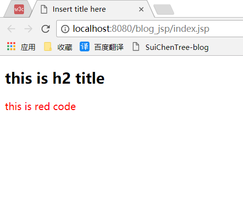
3.jsp的基本语法：
1.嵌入Java代码（脚本代码）：
在jsp页面可以嵌入Java的代码段来完成业务处理。
语法格式：
<% 编写Java代码 %>
- 打印九九乘法表：
<body>
<%
for(int i=0;i<10;i++){
for(int j=0;j<=i;j++){
String s=j+" * "+i+" = "+i*j;
out.print(s+" "); //每个式子有空格
}
out.print("<br/>");
}
%>
</body>
结果：
0 * 0 = 0
0 * 1 = 0 1 * 1 = 1
0 * 2 = 0 1 * 2 = 2 2 * 2 = 4
0 * 3 = 0 1 * 3 = 3 2 * 3 = 6 3 * 3 = 9
0 * 4 = 0 1 * 4 = 4 2 * 4 = 8 3 * 4 = 12 4 * 4 = 16
0 * 5 = 0 1 * 5 = 5 2 * 5 = 10 3 * 5 = 15 4 * 5 = 20 5 * 5 = 25
0 * 6 = 0 1 * 6 = 6 2 * 6 = 12 3 * 6 = 18 4 * 6 = 24 5 * 6 = 30 6 * 6 = 36
0 * 7 = 0 1 * 7 = 7 2 * 7 = 14 3 * 7 = 21 4 * 7 = 28 5 * 7 = 35 6 * 7 = 42 7 * 7 = 49
0 * 8 = 0 1 * 8 = 8 2 * 8 = 16 3 * 8 = 24 4 * 8 = 32 5 * 8 = 40 6 * 8 = 48 7 * 8 = 56 8 * 8 = 64
0 * 9 = 0 1 * 9 = 9 2 * 9 = 18 3 * 9 = 27 4 * 9 = 36 5 * 9 = 45 6 * 9 = 54 7 * 9 = 63 8 * 9 = 72 9 * 9 = 81
- 判断语句：
<%!int day = 3;%>
<%
if (day == 1 | day == 7) {
%>
<p>Today is weekend</p>
<%
} else {
%>
<p>Today is not weekend</p>
<%
}
%>
- switch…case块:
<%
switch(day) {
case 0:
out.println("It\'s Sunday.");
break;
case 1:
out.println("It\'s Monday.");
break;
case 2:
out.println("It\'s Tuesday.");
break;
case 3:
out.println("It\'s Wednesday.");
break;
case 4:
out.println("It\'s Thursday.");
break;
case 5:
out.println("It\'s Friday.");
break;
default:
out.println("It's Saturday.");
}
%>
2.jsp表达式：
表达式元素中可以包含任何符合Java语言规范的表达式，但是不能使用分号来结束表达式。
表达式中的内容先被转化成String，然后插入到表达式出现的地方。
由于表达式的值会被转化成String，所以您可以在一个文本行中使用表达式而不用去管它是否是HTML标签。
JSP表达式的语法格式：
<%= 表达式 %>
例子：
<%@ page language="java" contentType="text/html; charset=UTF-8"
pageEncoding="UTF-8"%>
<!DOCTYPE html PUBLIC "-//W3C//DTD HTML 4.01 Transitional//EN" "http://www.w3.org/TR/html4/loose.dtd">
<html>
<head>
<meta http-equiv="Content-Type" content="text/html; charset=UTF-8">
<title>Insert title here</title>
</head>
<body>
<p>
Today's date: <%= (new java.util.Date()).toLocaleString()%>
</p>
</body>
</html>
运行后得到以下结果：
Today's date: 2017-11-30 18:40:35
3.jsp注释：
JSP注释的语法格式：
<%-- 这里可以填写 JSP 注释 --%>
4.jsp指令标签（注意：<%@ ~~ %>中@与%不能分离 ，属性值不能以';' 号结尾）：
JSP指令用来设置与整个JSP页面相关的属性。
JSP指令语法格式：
<%@ 指令名称 指令属性="value" %>
三种指令标签：
<%@ page ... %> : 定义页面的依赖属性，比如脚本语言、error页面、缓存需求等等
<%@ include ... %> : 包含其他文件
<%@ taglib ... %> : 引入标签库,jar包的定义，可以是自定义标签。
1. page指令：
import 属性： 导入要使用的Java类.
<%@ page import="java.util.*" %>
contentType 属性 ：指定当前JSP页面的MIME类型和字符编码。
errorPage 属性：指定当JSP页面发生异常时需要转向的错误处理页面。
isErrorPage 属性：指定当前页面是否可以作为另一个JSP页面的错误处理页面.
language 属性：定义JSP页面所用的脚本语言，默认是Java。
session 属性：指定JSP页面是否使用session.
~ ~ ~
2. Include指令
JSP可以通过include指令来包含其他文件。被包含的文件可以是JSP文件、HTML文件或文本文件.包含的文件就好像是该JSP文件的一部分，会被同时编译执行。
Include指令的语法格式如下：
<%@ include file="url" %>
3. Taglib指令
JSP API允许用户自定义标签，一个自定义标签库就是自定义标签的集合。
Taglib指令引入一个自定义标签集合的定义，包括库路径、自定义标签。
Taglib指令的语法：
<%@ taglib url="url" prefix="prefixOfTag" %>
url属性确定标签库的位置，prefix属性指定被引用的标签库的使用前缀。
例子,引入 jstl 标签库：
<%@ taglib prefix="c" uri="http://java.sun.com/jsp/jstl/core" %>
5.jsp动作标签(更多信息，自行百度)：
JSP动作标签在请求处理阶段起作用。JSP动作标签是用XML语法写成的。
语法：
<jsp:标签名 属性名="value" />
常用的动作标签如下：
jsp:include ：在页面被请求的时候引入一个文件。
jsp:useBean ：寻找或者实例化一个JavaBean。
jsp:setProperty ：设置JavaBean的属性。
jsp:getProperty ：输出某个JavaBean的属性。
jsp:forward ：把请求转到一个新的页面。
所有的动作要素都有两个属性：id属性和scope属性。
①：id属性：
id属性是动作元素的唯一标识，可以在JSP页面中引用。动作元素创建的id值可以通过PageContext来调用。
②：scope属性：
该属性用于识别动作元素的生命周期。 id属性和scope属性有直接关系，scope属性定义了相关联id对象的寿命。 scope属性有四个可能的值： (1) page, (2)request, (3)session, 和 (4) application。
1. < jsp:include >动作标签：
该动作标签用来包含静态和动态的文件。把指定文件插入正在生成的页面。语法格式如下：
<jsp:include page="URL" flush="true" />
main.jsp：
<%-- flush 布尔属性，定义在包含目标资源前是否刷新缓存区。 --%> <jsp:include page="date.jsp" flush="true" />
2. < jsp:useBean >动作元素
用来装载一个将在JSP页面中使用的JavaBean。
这个功能非常有用，因为它使得我们既可以发挥Java组件重用的优势，同时也避免了损失JSP区别于Servlet的方便性。
jsp:useBean动作最简单的语法为：
<%-- class 指定Bean的完整包名。 --%> <jsp:useBean id="name" class="package.class" />
在类载入后，我们既可以通过 jsp:setProperty 和 jsp:getProperty 动作标签来修改和检索bean的属性。
3. jsp:setProperty, jsp:getProperty动作标签:
jsp:getProperty动作提取指定Bean属性的值，转换成字符串，然后输出。
jsp:setProperty用来设置已经实例化的Bean对象的属性.
例子如下：
<%-- name 要检索的Bean属性名称。Bean必须已定义。。
property 表示要提取Bean属性的值.
class 指定Bean的完整包名。
--%>
<jsp:useBean id="test" class="action.TestBean" />
<jsp:setProperty name="test" property="message" value="Hello JSP..." />
<jsp:getProperty name="test" property="message" />
运行结果：
Hello JSP...
4.< jsp:forward >动作元素
jsp:forward动作把请求转到另外的页面。jsp:forward标记只有一个属性page。
语法格式如下所示：
<jsp:forward page="URL" />
5.< jsp:param >动作标签
用于其他标签的子标签，为其他标签传递参数。
<%-- name : 指定参数名称 。 这段代码：在转发请求到addUser.jsp 页面的同时，传递参数 useName --%> <jsp:forward page="addUser.jsp"> <jsp:param name="userName" value="xiaoming"> </jsp:forward>
6.jsp九大内置对象：
在任何一个jsp 页面中，都包含了输出，请求，回应，应用上下文 ，异常处理 等一些概念，jsp把这些具有公共特性的功能抽象，封装为一个个jsp的内置对象。
内置对象：是JSP容器为每个页面提供的Java对象，开发者可以直接使用它们而不用显式声明。
1.out 输出对象：
在jsp的java代码段中。主要用于向客户端的浏览器输出信息。
<%
out.print("i am jsp");
out.println("i am jsp");
%>
2.request 请求对象
request对象是javax.servlet.http.HttpServletRequest 类的实例。
request对象提供了一系列方法来获取客户端请求的HTTP头信息，cookies，HTTP方法等等。
- 获取请求参数：
在一次请求中，可以在URL上通过使用' ? ' 的方式来传递参数。后通过request 对象的getParameter() 方法获取参数的值。
<a href="a.jsp?id=1">点击</a>
a.jsp :
<%
String id=request.getParameter("id");
%>
<%-- 返回此request中id指定的参数的参数值，若不存在则返回null --%>
- 获取form 表单的信息：
form表单的复选框，下拉列表框中被选定的值，要使用 request 对象的getParameterValues() 方法获取被选中参数的值。其他表单组件可以用getParameter() 方法获取参数的值。
<body> <form action="main.jsp" method="POST" target="_blank"> <!-- 爱好复选框 --> <div> <input type="checkbox" name="like" value="Maths"/> Maths <input type="checkbox" name="like" value="Physics"/> Physics <input type="checkbox" name="like" value="Chemistry"/> Chemistry </div> <input type="submit" value="提交" /> </form> </body>
<!--
获取多个复选框的值。
-->
String[] like=request.getParameterValues("like");
- 获取请求客户端的信息（自行百度）
- 在作用域中管理属性：
通过使用 setAttribute() 方法可以在 request 对象的属性列表中添加一个属性，然后在request 对象中的作用域中使用它。用 getAttribute() 方法将属性取出。用 removeAttribute() 方法把属性删除。
<body>
<%
request.setAttribute("time",new Date()); //在request对象中添加一个属性 time，属性值为当前系统时间。
%>
获取time 的属性值：<%=request.getAttribute("time") %>
<!--删除属性 time -->
<%
request.removeAttribute("time");
%>
再次获取time 的属性值：<%=request.getAttribute("time") %>
</body>
注意：设置的属性超出request作用域就失效。
- 解决中文乱码问题：
在通过request 对象请求参数时，若参数值为中文，则有可能 获取的参数值为乱码。
①：若在获取请求参数时乱码：
String usrename=new String(request.getParameter("username").getBytes("iso-8859-1"),"UTF-8")
②：获取表单提交的数据为乱码：
设置jsp页面的编码格式为utf-8。
<%
request.setCharacterEncoding("UTF-8"); //注意该方法，要在页面上没有调用任何request对象的方法中使用。
%>
3.response 响应对象
用于响应客户请求，向客户端输出信息
- 重定向网页：
通过使用该对象的 sendRedirect() 方法，把原先的目标网页重定向到另一个网页。重定向可以把地址重新定向到不同的主机上，用户可以从浏览器上看到跳转后的地址。并且在重定向操作后，request 中的属性失效，并且进入一个新的request 对象。
response.sendRedirect("http://www.baidu.com");
URL可以是相对路径或绝对路径。
在该方法后面，不要继续存在脚本代码。因为重定向后，进入另一个页面，原先页面的脚本代码没有用处，可能还会产生异常。
- 处理HTTP文件头信息：
setHeader(String headname,String value) 方法同过两个参数————头名称 和 参数值 来设置HTTP 文件头信息。
<%
response.setHeader("refresh","5"); //设置网页每5秒刷新一次
response.setHeader("refresh","2;URL=aa.jsp"); //设置2秒后，自动跳转到 aa.jsp页面。
%>
- 设置页面响应类型：
默认情况下，jsp页面的内容类型是 text/html,就是html或文本数据，此值不是固定的。
response.setContentType("text/html");
可选值有：text/html , application/x_msexcel , application/msword ,.....
4.session 会话对象（在同一个浏览器中共享数据）
由于HTTP协议是一种无状态协议（客户发出请求，服务器接受请求并响应，一个流程就结束。）服务器无法一直保存请求响应信息。而session 对象用于保存该类信息。
session 对象内部使用Map类来保存数据，数据格式为“ key / value”.
- 创建及获取session 信息：
setAttribute(String key,Object obj)方法：用于把信息保存到session 范围中。
getAttribute(String key)方法，用于获取session范围的信息。
<%
String s="i am session";
session.setAttribute("ms",s);
out.println(session.getAttribute("ms"));
%>
- 设置session的有效时间：
注意：如果客户端长期不向服务器发送请求，session对象会消失。session在服务器的默认存储时间为30 分钟。超过30分钟，session 存储的信息失效，此时调用getAttribute（） 方法，会产生异常。
session.setMaxInactiveInterval(10000);
可以通过手动设置session的有效时间。
- 移除session中的对象，手动销毁session对象。
removeAttribute(String key) 方法 ： 移除存储在session的对象。
session.removeAttribute("ms"); //若移除的session已经失效，报异常。
invalidate()方法，删除session 对象。
session.invalidate();
若session对象 销毁后，在调用该session对象，则产生异常。
5.application对象（在同一个应用程序中共享数据）
application对象的信息保存在服务器中，直到服务器关闭，否则 application对象保存的信息都有效。与session 对象相比 application 对象生命期更长，相当于系统的 “全局变量”。
- application 中数据的操作：
<% application.setAttribute(String name,Object obj); //创建一个application 范围内有效的属性。 application.getAttribute(String name); //获取application 对象中的某个属性。 application.getAttributeNames(); //获取application 对象的所有属性； application.removeAttribute(String name); //把某个属性从application对象中移除。 %>
- 例子（实现网页计数的功能，记录网页的来访数量）
<body>
<%
Integer a=(Integer)application.getAttribute("visitorCount"); //获取当前访客数量
if(a==null){ //如果当前访客数量为 null，表示为第一个访客
a=1;
}else{
a++;
}
application.setAttribute("visitorCount",a); //把最新的访客数量 设为applciation对象的属性，使得页面共享这个数据
%>
<p>第<%=a %>位访客</p>
</body>
6.page对象
page对象代表jsp页面本身，只在jsp页面内有效。类似于Java类中的this关键字。
方法：
<% page.getClass(); //返回当前Object的类 page.hashCode(); //返回Object的哈希码； page.toString(); //转换成字符串 page.equals(Object obj); //比较 %>
7.pageContent对象（很少使用）
pageContent对象的创建与初始化都有容器完成。可以通过该对象可以获得jsp 页面的其他内置对象。很少使用，因为通过pageContent对象调用其它对象很麻烦。
<% pageContent.getRequest(); //获取request 对象 pageContent.getsession(); //获取session对象 ~ ~ ~ %>
8.config 对象（获取web.xml 配置信息）
<% config.getServletName(); //它返回包含在<servlet-name>元素中servlet名字， //注意，<servlet-name>元素在 WEB-INF\web.xml 文件中定义。 config.getInitParameter(); //获取服务器所有的初始参数名称 %>
9.exception对象（获取异常信息）
exception对象 用来处理jsp 文件执行时发生的所有错误与异常，只有在page 指令中的 isErrorPage 属性值为 true 的jsp 页面中使用。
运行流程：
当jsp 页面出现没有捕获的异常时，jsp 会生成exception 对象，并把exception 对象传送到 page指令中设定的错误页面，然后在错误页面处理相应的exception 对象。
<% exception.getMessage(); //返回exception对象的异常信息字符串 exception.getLocalizedmessage(); //返回本地化的异常错误 exception.toString(); //返回异常错误信息的描述 %>
补充：
在超链接中传递多个参数值(使用‘ & ’)：
<a href="user.jsp?userid=1&name=tom&age=12&gender=woman">超链接</a>
4.jsp与javaBean的混合：
- 实例化javabean对象：
<jsp:useBean id="beanName" scope="作用域" class="bean的类路径" />
<!--
scope的取值：
page:当前页面有效。
request： 请求范围内有效。
session： session范围内有效。
application： 服务器内有效。
-->
- 访问bean的属性：
使用jsp:getProperty 与 jsp:getProperty 标签。
<jsp:useBean id="students" class="com.entity.StudentsBean"> <!-- name属性: jsp:useBean标签的 id值。property属性：想要调用的getter或setter方法。 --> <jsp:setProperty name="students" property="firstName" value="Zara"/> <jsp:setProperty name="students" property="lastName" value="Ali"/> <jsp:setProperty name="students" property="age" value="10"/> </jsp:useBean> <!-- name属性: jsp:useBean标签的 id值。property属性：想要调用的getter或setter方法。 --> <p>Student First Name: <jsp:getProperty name="students" property="firstName"/> </p> <p>Student Last Name: <jsp:getProperty name="students" property="lastName"/> </p> <p>Student Age: <jsp:getProperty name="students" property="age"/> </p>
Servlet（继承，实现了Servlet接口的，Java类）
1.概述：
Servlet 是运行在带有支持Servlet 规范的解释器的 web 服务器上的 Java 类，是作为来自 Web 浏览器或其他 HTTP 客户端的请求和 HTTP 服务器上的数据库或应用程序之间的中间层。
使用 Servlet，您可以收集来自网页表单的用户输入，呈现来自数据库或者其他源的记录，还可以动态创建网页。
注意：一个jsp文件最终将会转换为Servlet 后运行的。Web容器（Tomcat）最终运行的是一个Servlet文件，而不是 jsp文件。
2. 原理与继承关系：
从http协议中的请求和响应可以得知，浏览器发出的请求是一个请求文本，而浏览器接收到的也应该是一个响应文本。并不知道是其中的内部细节。只知道浏览器发送过来的请求也就是request，我们响应回去的就用response。
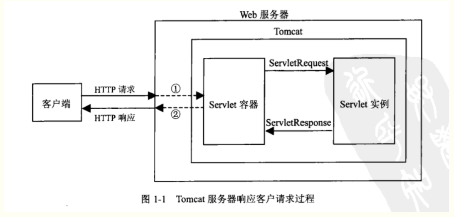
①：Tomcat将http请求文本接收并解析，然后封装成HttpServletRequest类型的request对象，所有的HTTP头数据读可以通过request对象调用对应的方法查询到。
②：Tomcat同时会要响应的信息封装为HttpServletResponse类型的response对象，通过设置response属性就可以控制要输出到浏览器的内容，然后将response交给tomcat，tomcat就会将其变成响应文本的格式发送给浏览器
Java Servlet API 是Tomcat和servlet之间的接口，它定义了serlvet的各种方法，还定义了Servlet容器（Tomcat）传送给Servlet的对象类，其中最重要的就是ServletRequest和ServletResponse。所以说我们在编写servlet时，需要实现Servlet接口，按照其规范进行操作。
通常情况下，编写一个Java类,继承HttpServlet类（实现的servlet接口），相当于把该java类与Tomcat（Servlet容器）进行了关联。

3.创建Servlet,与配置Servlet（把servlet对象注入到Servlet容器中）：
- 创建Servlet（继承HttpServlet类，并重写该类的方法）：
public class myservlet extends HttpServlet{ @Override protected void doGet(HttpServletRequest request, HttpServletResponse response) throws ServletException, IOException { System.out.println("this is 重写HttpServlet的方法, 处理get类型的请求"); } @Override protected void doPost(HttpServletRequest request, HttpServletResponse response) throws ServletException, IOException { System.out.println("this is 重写HttpServlet的方法， 处理post类型的请求"); } @Override public void init() throws ServletException { System.out.println("this is 重写GenericServlet的方法， Servlet对象的初始化方法"); } @Override public void destroy() { System.out.println("this is 重写GenericServlet的方法 , Servlet对象的销毁方法"); } }
- 配置Servlet(在web.xml文件):
配置Servlet，主要用于把创建的Servlet注入到Servlet容器（Tomcat）中。
让浏览器发出的请求知道到达哪个servlet，也就是让tomcat将封装好的request找到对应的servlet让其使用
web.xml
<!-- 配置格式： <servlet> <servlet-name> servlet的名称 </servlet-name> <servlet-class> servlet的完整类名 </servlet-class> </servlet> <servlet-mapping> <servlet-name> servlet的名称 </servlet-name> <url-pattern> 访问的 url 的地址,浏览器通过它找到对应的servlet </url-pattern> </servlet-mapping> --> <servlet> <servlet-name>myservlet</servlet-name> <servlet-class>com.servlet.myservlet</servlet-class> </servlet> <servlet-mapping> <servlet-name>myservlet</servlet-name> <url-pattern>/mys</url-pattern> </servlet-mapping>
浏览器 调用servlet的步骤：
①：首先浏览器通过http://localhost:8080/blog_jsp/mys来找到web.xml中的url-pattern。
②：匹配到了url-pattern后，就会找到servlet的名字myservlet，知道了名字，就可以通过servlet-name找到第三步。
③：到了第三步，也就能够知道servlet类的位置了。然后到其中找到对应的处理方式进行处理。
- 使用Servlet处理表单数据：
①：创建servlet（修改上面例子中的servlet）
public class myservlet extends HttpServlet{ @Override protected void doGet(HttpServletRequest request, HttpServletResponse response) throws ServletException, IOException { System.out.println("this is 重写HttpServlet的方法, 处理get类型的请求"); } @Override protected void doPost(HttpServletRequest request, HttpServletResponse response) throws ServletException, IOException { request.setCharacterEncoding("utf-8"); //设置请求的编码格式,防止中文乱码。 response.setContentType("text/html;charset=utf-8"); //设置响应的编码格式,防止中文乱码。 String name=request.getParameter("name"); Integer age=Integer.valueOf(request.getParameter("age")); System.out.println("姓名 ："+name+", 年龄："+age); PrintWriter outp = response.getWriter(); //从response 中获取输出流对象。 outp.println("姓名 ："+name+", 年龄："+age); //输出字符串给浏览器 outp.flush(); //刷新输出流 outp.close(); //关闭输出流 } }
②：编写jsp中的表单：
<form action="mys" method="post"> 名字：<input type="text" name="name"> 年龄：<input type="text" name="age" /> <input type="submit" value="提交" /> </form>
注意：action属性的值 是 表单提交的servlet的地址，即配置文件（web.xml）中的Servlet的 URL 映射值
<servlet-mapping> <servlet-name>myservlet</servlet-name> <url-pattern>/mys</url-pattern> </servlet-mapping>
③: 运行
开启tomcat 服务器，运行index.jsp文件。


注意：浏览器的地址变化，从blog_jsp/index.jsp ----> blog_jsp/mys
④：补充
当tomcat服务器启动，服务器会根据web.xml的信息，通过调用servlet的初始化方法，来创建servlet。
4.servlet的生命周期：
Servlet 生命周期可被定义为从创建直到毁灭的整个过程。以下是 Servlet 遵循的过程：
①：Servlet 通过调用 init () 方法进行初始化。
②：Servlet 调用 service() 方法来处理客户端的请求。
③：Servlet 通过调用 destroy() 方法终止（结束）。
④：最后，Servlet 是由 JVM 的垃圾回收器进行垃圾回收的。
服务器启动时(web.xml中配置load-on-startup=1，默认为0)或者第一次请求该servlet时，就会初始化一个Servlet对象，也就是会执行初始化方法init(ServletConfig conf).
该servlet对象去处理所有客户端请求，在service(ServletRequest req，ServletResponse res)方法中执行
最后服务器关闭时，才会销毁这个servlet对象，执行destroy()方法。
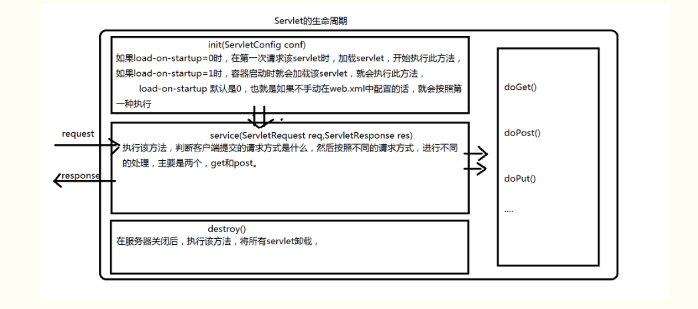
5.servlet编写过滤器（Filter 过滤器）：
Servlet 过滤器是可用于 Servlet 编程的 Java 类，有以下目的：
①：在客户端的请求访问数据库，后端资源之前，拦截这些请求。
②：在服务器的响应发送回客户端之前，处理这些响应。
过滤器被部署在配置在 web.xml 中，然后映射到web.xml中的 Servlet。
当 Web 容器启动 Web 应用程序时，它会为您在web.xml中声明的每一个过滤器创建一个实例。
该过滤器执行的顺序是按它们在部署描述符中声明的顺序。
- 创建过滤器并配置：
过滤器是一个实现了 javax.servlet.Filter 接口的 Java 类。
public class LogFilter implements Filter{ @Override public void destroy() { System.out.println("LogFilter destroy"); } /* * 在该方法中实现过滤操作。 * 请求过滤后，需要把请求释放，向下传递。 * */ @Override public void doFilter(ServletRequest request, ServletResponse response, FilterChain chain) throws IOException, ServletException { System.out.println("LogFilter doFilter"); chain.doFilter(request, response); //把过滤器拦截的请求释放，向下传递 } @Override public void init(FilterConfig arg0) throws ServletException { System.out.println("LogFilter init"); } }
web.xml
<filter> <filter-name>LoginFilter</filter-name> <filter-class>com.filter.LogFilter</filter-class> </filter> <filter-mapping> <filter-name>LoginFilter</filter-name> <url-pattern>/*</url-pattern> <!--过滤器的URL映射--> </filter-mapping>
注意：
filter-mapping标签用于把过滤器和URL关联，而URL 又与servlet 关联。
①：/* 表示对所有是servlet 都进行过滤。在少数的 Servlet 上应用过滤器，可以指定一个特定的 Servlet 路径
②：web.xml 中的 filter-mapping 元素的顺序决定了 Web 容器应用过滤器到 Servlet 的顺序。若要反转过滤器的顺序，您只需要在 web.xml 文件中反转 filter-mapping 元素即可。
- 多个过滤器的运行流程：
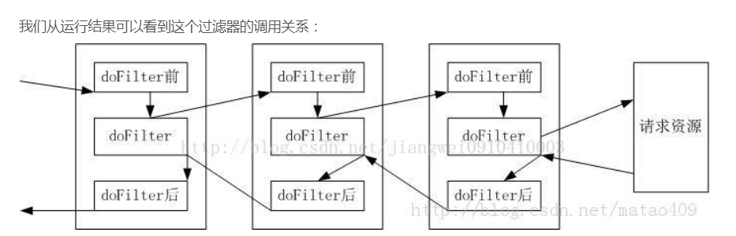
- 实现字符编码过滤器：
①：创建过滤器（修改上面的过滤器）：
public class LogFilter implements Filter{ @Override public void destroy() { System.out.println("LogFilter destroy"); } /* * 在该方法中实现过滤操作。 * 请求过滤后，需要把请求释放，向下传递。 * */ @Override public void doFilter(ServletRequest request, ServletResponse response, FilterChain chain) throws IOException, ServletException { System.out.println("LogFilter doFilter"); request.setCharacterEncoding("utf-8"); //设置request的编码格式 response.setContentType("text/html;charset=utf-8"); chain.doFilter(request, response); //把过滤器拦截的请求释放，向下传递 } @Override public void init(FilterConfig arg0) throws ServletException { System.out.println("LogFilter init"); } }
②：创建jsp：
<form action="mys" method="post"> 名字：<input type="text" name="name"> 年龄：<input type="text" name="age" /> <input type="submit" value="提交" /> </form>
③：编写servlet：
public class myservlet extends HttpServlet{ @Override protected void doGet(HttpServletRequest request, HttpServletResponse response) throws ServletException, IOException { System.out.println("this is 重写HttpServlet的方法, 处理get类型的请求"); } @Override protected void doPost(HttpServletRequest request, HttpServletResponse response) throws ServletException, IOException { String name=request.getParameter("name"); Integer age=Integer.valueOf(request.getParameter("age")); System.out.println("姓名 ："+name+", 年龄："+age); PrintWriter outp = response.getWriter(); //从response 中获取输出流对象。 outp.println("姓名 ："+name+", 年龄："+age); //输出字符串给浏览器 outp.flush(); //刷新输出流 outp.close(); //关闭输出流 } @Override public void init() throws ServletException { System.out.println("this is 重写GenericServlet的方法， Servlet对象的初始化方法"); } @Override public void destroy() { System.out.println("this is 重写GenericServlet的方法 , Servlet对象的销毁方法"); } }
④：运行结果：
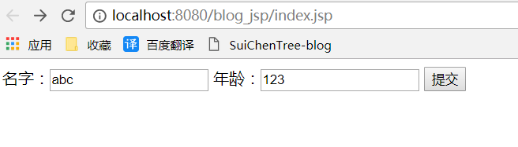

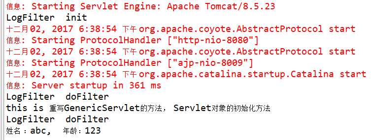
- 补充：
在doFilter() 方法中，当业务逻辑处理完成。需要通过FilterChain 对象的 doFilter（）方法将请求传递到下一个过滤器或目标资源中，否则出现错误。
6.servlet 对于异常的处理：
当一个 Servlet 抛出一个异常时。web.xml 使用 error-page 元素来指定对特定异常 或 HTTP 状态码 作出相应的 Servlet 调用。
web.xml
<servlet> <servlet-name>myservlet</servlet-name> <servlet-class>com.servlet.myservlet</servlet-class> </servlet> <servlet-mapping> <servlet-name>myservlet</servlet-name> <url-pattern>/mys</url-pattern> </servlet-mapping> <!-- error-code 相关的错误页面 当状态码为404 时，URL映射为 /mys 的servlet 将被调用 --> <error-page> <error-code>404</error-code> <location>/mys</location> </error-page> <!-- exception-type 相关的错误页面 当该servlet 出现 IOException时，URL映射为 /mys 的servlet 将被调用 --> <error-page> <exception-type>java.io.IOException</exception-type > <location>/mys</location> </error-page>
如果您想对所有的异常有一个通用的错误处理程序，那么应该定义下面的 error-page，而不是为每个异常定义单独的 error-page 元素.
<error-page> <exception-type>java.lang.Throwable</exception-type > <location>/mys</location> </error-page>
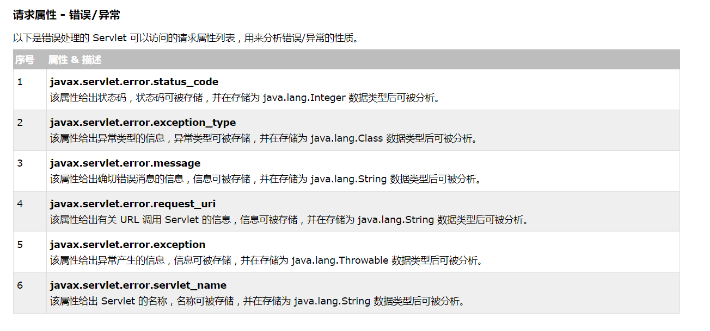
EL表达式 与 JSTL标签库：
1.EL(表达式语言，Epression Language)
EL主要用于简化jsp中对 对象的引用。
- EL表达式语法（中间为合法的表达式）：
${~ ~ ~}
例如：在jsp页面上显示一段话。
以前：out.print("i am xiaoming");
现在：${"i am xiaoming"}
- EL的运算符：
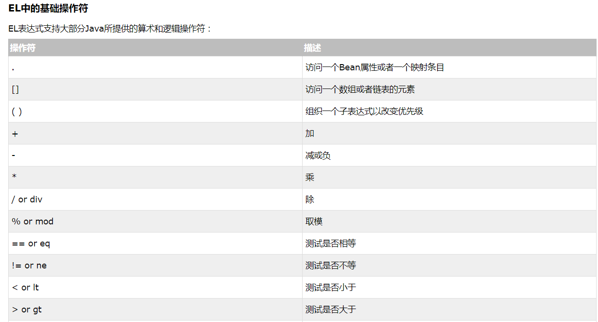

注意：EL的 “ + ”运算符，不能把两个字符串连接。若两个字符串无法转化为int 类型，则抛出异常。
- EL 操作jsp的内置对象：
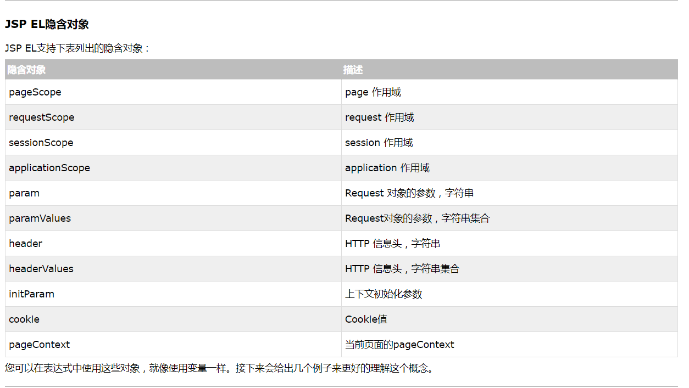
<body>
${1+2}
${requestScope.user} <!--获取request 作用域的 user属性-->
</body>
2.JSTL
JSP 标准标签库（jstl）,是一个JSP标签集合，它封装了JSP应用的通用核心功能。
- 使用前提：
①：在WEB-INF下的lib文件夹中加入jstl-1.2.jar 和 standard-1.1.2.jar
②：在需要使用jstl的jsp页面上要引入：
<%@ tagliburi="http://java.sun.com/jsp/jstl/core" prefix="c"%>
③：使用jstl
- 核心标签：
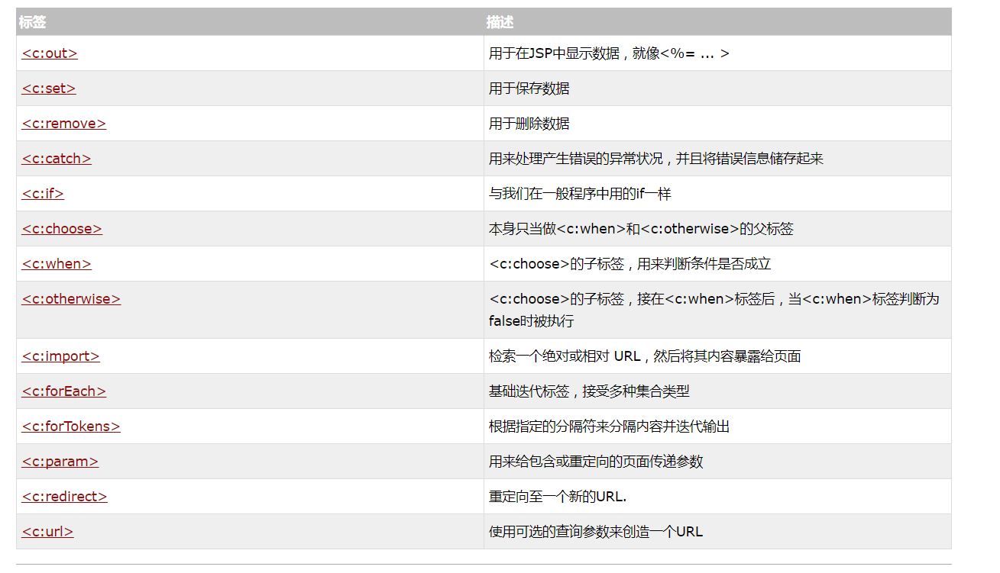
<!--c:out标签
格式： <c:out value="表达式">
-->
<c:out value="123"/>
<!--c:set 变量设置标签, c:remove 标签
格式：<c:set var="变量名" value="变量值" scope="变量的作用域，默认为page"/>
<c:remove var="移除的变量名" scope="该变量的范围"/>
-->
<c:set value="root" var="userid"/>
userid:${userid }
<c:remove var="userid"/>
userid:${userid }
<!--
流程控制标签：
<c:if> ：判断表达式的值，如果表达式的值为真则执行其主体内容。
<c:choose>和<c:when>和<c:otherwise> 标签：
<c:choose>标签与Java switch语句的功能一样，用于在众多选项中做出选择。
switch语句中有case，而<c:choose>标签中对应有<c:when>，
switch语句中有default，而<c:choose>标签中有<c:otherwise>。
<c:when>标签的test属性，用于条件判断。
-->
<c:set var="salary" scope="session" value="${2000*2}"/>
<c:if test="${salary > 2000}">
<p>我的工资为: <c:out value="${salary}"/><p>
</c:if>
<c:set var="salary" scope="session" value="${2000*2}"/>
<p>你的工资为 : <c:out value="${salary}"/></p>
<c:choose>
<c:when test="${salary <= 0}">
太惨了。
</c:when>
<c:when test="${salary > 1000}">
不错的薪水，还能生活。
</c:when>
<c:otherwise>
什么都没有。
</c:otherwise>
</c:choose>
<!--
循环标签：<c:forEach> , <c:forTokens>
这两个标签封装了Java中的for，while，do-while循环。
相比而言，<c:forEach>标签是更加通用的标签，因为它迭代一个集合中的对象。
<c:forTokens>标签将字符串分隔为一个子串数组然后迭代它们。
-->
<c:forEach var="i" begin="1" end="5">
Item <c:out value="${i}"/><p>
</c:forEach>
<c:forTokens items="google,w3cschool,taobao" delims="," var="name">
<c:out value="${name}"/><p>
</c:forTokens>
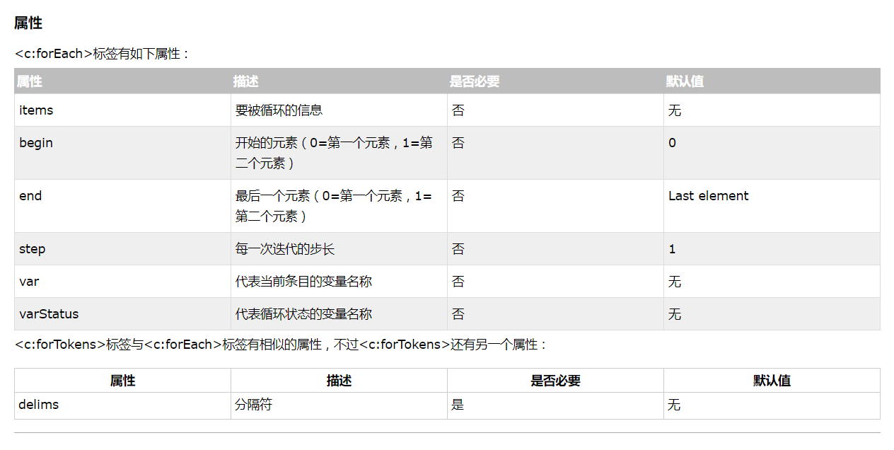
- 补充：
jstl 与 el 没有什么关系，但一般把它们配合在一起使用。jstl 与 el 的配合对于简化jsp页面比单独使用更强大。
JDBC
参考链接：Class.forName()方法的作用
JDBC（Java DataBase Connectivity,java数据库连接）是一种用于执行SQL语句的Java API，可以为多种关系数据库提供统一访问,用来连接 Java 编程语言和广泛的数据库，它由一组用Java语言编写的类和接口组成。JDBC提供了一种基准，据此可以构建更高级的工具和接口，使数据库开发人员能够编写数据库应用程序。
1.jdbcl连接数据库，以mysql数据库为例：
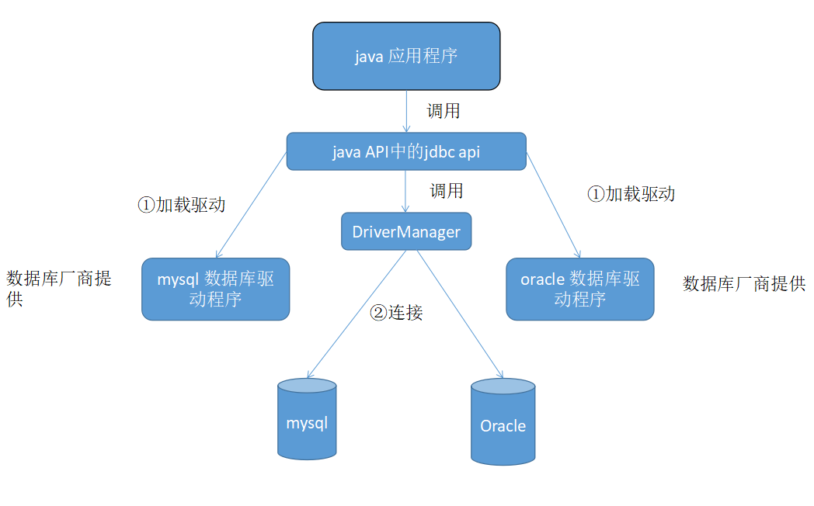
- ①：加载驱动：
把mysql的驱动程序（不同的数据库驱动程序，都由数据库厂商提供）放到WEB-INF/lib目录下：
mysql-connector-java-5.1.40-bin.jar
Class.forName("com.mysql.jdbc.Driver");
加载数据库驱动程序使用的是Class.forName（）方法。该方法会把驱动程序加入到 JVM 中。
- 设置数据库的用户名，密码，连接URL.
连接URL的基本格式：“jdbc协议 + 数据库ip 地址 + 数据库端口号 + 数据库名称”
String url="jdbc:mysql://localhost:3306/test"; String user="root"; String password="123456";
注意：这里的用户，密码 要与你安装的MySQL 数据库的用户，密码，对应。
- ②：连接:
通过jdbc api的DriverManager类的getConnection（）方法，创建数据库的连接。
Connection conn=DriverManager.getConnection(url,user,password);
- 建立连接后，使用连接对象创建操作SQL语句的Statement 对象或PreparedStatement对象。
String sql="insert into goods (name,price,address) values(?,?,?)"; PreparedStatement pstmt=conn.prepareStatement(sql); pstmt.setString(1,g.getName()); pstmt.setDouble(2,g.getPrice()); pstmt.setString(3,g.getAddress()); /* ? 表示占位符，表示要插入数据的位置 pstmt.setString(1,g.getName()); 表示给第一个占位符赋值。 */
- 调用对象的execute（）方法,编译执行sql语句：
int a=pstmt.execute(); //a=1 ,表示 数据表的一行 受影响。
-
关闭数据库连接，释放系统资源：
conn.close(); -
完整代码：
public class linkdatabase { private static String dirverName="com.mysql.jdbc.Driver"; private static String url="jdbc:mysql://localhost:3306/test"; private static String user="root"; private static String password="123456"; public static Connection getconnection(){ Connection conn=null; try { Class.forName("com.mysql.jdbc.Driver"); conn=DriverManager.getConnection(url,user,password); } catch (ClassNotFoundException e) { e.printStackTrace(); System.out.println("数据库链接失败1"); } catch (SQLException e) { e.printStackTrace(); System.out.println("数据库链接失败2"); } return conn; } } ----------------------------------- public class Goods_delete_Controller extends HttpServlet { private Connection conn=linkdatabase.getconnection(); //获取数据库连接 protected void doGet(HttpServletRequest request, HttpServletResponse response) throws ServletException, IOException { Integer id=2; int a=0; String sql="delete from goods where id=?"; PreparedStatement pstmt; try { pstmt = conn.prepareStatement(sql); pstmt.setInt(1,id); //给占位符赋值 a=pstmt.executeUpdate(); //执行sql语句，返回 a } catch (SQLException e) { System.out.println(" GoodsDao delete 异常"); e.printStackTrace(); } if(a==1) { System.out.println("删除成功"); /* * 查询全部数据 * */ List<Goods> lg=gs.selectAll_service(conn); request.setAttribute("listgoods", lg); //把查出来的数据，存放在request对象的listgoods属性中 request.getRequestDispatcher("goodslist.jsp").forward(request,response); //把查询的数据传递给下一个 goodslist.jsp 页面 } } }
2.Statement 接口与PreparedStatement接口:
JDBC 的 Statement 和 PreparedStatement 接口定义的方法和属性，可以让你发送 SQL 命令到数据库，并从你的数据库接收数据。
注意：开发中不建议使用Statement来操作数据库，而是使用PreparedStatement，因为Statement是执行的是完整的SQL语句。而PreparedStatement 可以执行带参数的sql语句。
1.Statement 接口：
主要用于执行静态的sql语句（不带参的sql 语句），并返回结果。
①：创建Statement 对象：
Statement stmt=conn.createStatement( );
②：你可以用它的三个常用执行方法的任一方法来执行 SQL 语句：
-
boolean execute(String SQL) :
如果 ResultSet 对象可以被检索，则返回的布尔值为 true ，否则返回 false 。当你需要使用真正的动态 SQL 时，可以使用这个方法来执行 SQL 语句。 -
int executeUpdate(String SQL) :
返回执行 SQL 语句影响的行的数目。 常用于INSERT，UPDATE 或 DELETE 语句。 -
ResultSet executeQuery(String SQL) :
返回一个 ResultSet 对象。当你希望得到一个结果集时使用该方法。 常用于SELECT 语句。
2.PreparedStatement 接口：
Statement 对象执行静态sql 语句，但在实际过程中，往往将程序的变量作为sql 语句的参数。而这时，使用Statement 对象 操作sql语句会过于繁琐，并且存在安全方面的缺陷。因此这是，使用PreparedStatement 对象比较好。
PreparedStatement 对象继承 Statement 对象，它们之间的区别：
①：PreparedStatement 对象 执行的sql 语句都是预编译的,可以高效的多次执行sql 语句。
②：可以使用占位符 “ ？ ” 来代替sql语句的参数，然后通过 setXXX() 方法，给占位符赋值。
- 创建PreparedStatement 对象：
String SQL = "Update Employees SET age = ? WHERE id = ?"; PreparedStatement pstmt = conn.prepareStatement(SQL); pstmt.setInt(1,age); //把参数的age值，赋值给 第一个占位符。 pstmt.setInt(2,id); int a=pstmt.executeUpdate(); //执行sql语句,并传回结果。
- 常用方法
pstmt.execute(); //执行的sql语句可以说任何种类的sql 语句 pstmt.executeQuery(); //执行查询语句 pstmt.executeUpdate(); // 必须是insert ，update ， delete 语句 pstmt.setBoolean(int index,boolean b); //给占位符设置boolean值 pstmt.setDate(int index,Date d); //给占位符设置date值 pstmt.setString(int index,String str); //给占位符设置String值 pstmt.setInt(int index,int a); //给占位符设置int值 ....
3.结果集ResultSet接口（提供指针功能）:
ResultSet rs=pstmt.executeQuery("select * from user");
其用于保存查询时，返回的结果集。结果集与数据库表的字段相对应，与表一样也是由行与列组成。并且在结果集的行上提供指针功能。可以通过指针来操作结果集的数据
- 常用方法：
beforeFirst(); //把指针移到ResultSet 对象的开头，正好在第一行之前。 afterLast(); //把指针移到ResultSet 对象的末尾，正好在最后一行之后。 close(); //释放资源。 first(); //把指针移到第一行。 next(); //把指针从当前行，下移一行，常用与while循环的迭代条件。 getBoolean(int columnindex); //获取当前行上指定列的值（Boolean类型的） getBoolean(String columnName); //通过列名获取当前行上列的值（Boolean类型的） getDate(int columnindex); //获取当前行上指定列的值（Date类型的） getDate(String columnName); //通过列名获取当前行上指定列的值（Boolean类型的） getInt(int columnindex); //获取当前行上指定列的值（Int类型的） getInt(String columnName); //通过列名获取当前行上指定列的值（Boolean类型的） getString(int columnindex); //获取当前行上指定列的值（String类型的） getString(String columnName); //通过列名获取当前行上指定列的值（Boolean类型的） ...
- 例子：
ResultSet result = stmt.executeQuery("SELECT * FROM user"); while(result.next()){ System.out.print(result.getString("name")); //name 是表的name列，若name列是第一列，可写成：result.getString(1); System.out.print(result.getString("email")); System.out.print(result.getInt("age")); }
4.例子：jdbc 操作数据库:
首先，导入MySQL的数据库驱动程序包（mysql-connector-java-5.1.40-bin.jar）
- 创建表（goods表）,数据库名称为test
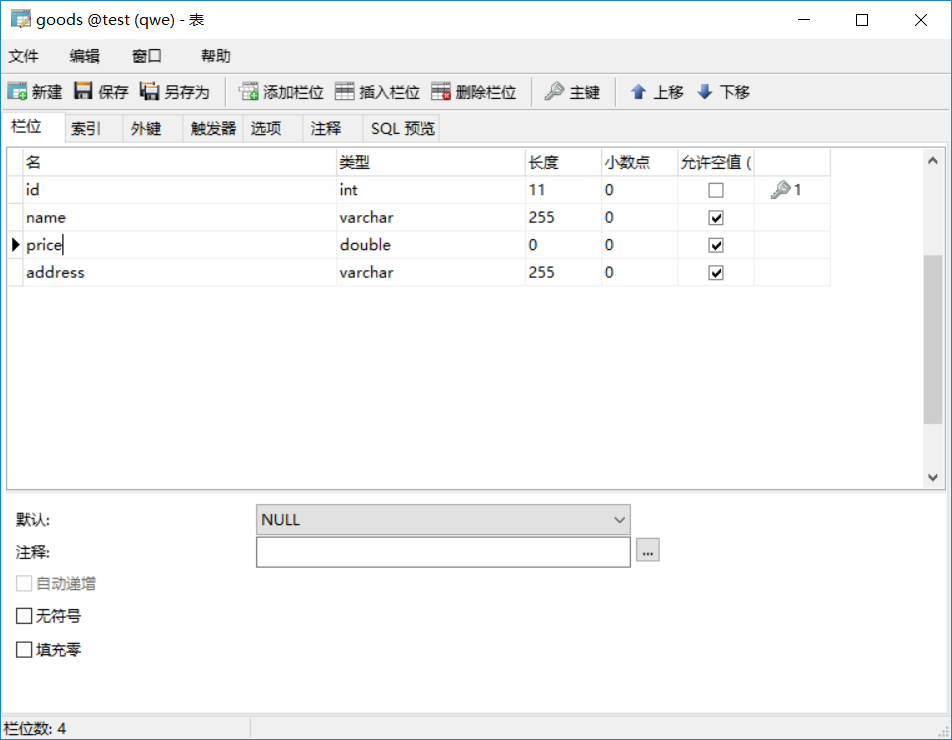
- 创建实体类（数据表的映射）：
package com.entity; public class Goods { private Integer id; private String name; private Double price; private String address; public Goods() { } public Goods(String name, Double price, String address) { this.name = name; this.price = price; this.address = address; } public Integer getId() { return id; } public void setId(Integer id) { this.id = id; } public String getName() { return name; } public void setName(String name) { this.name = name; } public Double getPrice() { return price; } public void setPrice(Double price) { this.price = price; } public String getAddress() { return address; } public void setAddress(String address) { this.address = address; } @Override public String toString() { return "Goods [id=" + id + ", name=" + name + ", price=" + price + ", address=" + address + "]"; } }
- jdbc连接数据库：
package com.link; import java.sql.Connection; import java.sql.DriverManager; import java.sql.SQLException; public class linkdatabase { private static String dirverName="com.mysql.jdbc.Driver"; private static String url="jdbc:mysql://localhost:3306/test"; //我这里的数据库名称是test private static String user="root"; private static String password="123456"; public static Connection getconnection(){ Connection conn=null; try { Class.forName("com.mysql.jdbc.Driver"); //把数据库驱动程序加载到jvm中。 conn=DriverManager.getConnection(url,user,password); //连接数据库 } catch (ClassNotFoundException e) { e.printStackTrace(); System.out.println("数据库链接失败1"); } catch (SQLException e) { e.printStackTrace(); System.out.println("数据库链接失败2"); } return conn; //返回数据库的连接 } }
- 测试jdbc 对数据库的增删改查：
package com.test; import java.sql.Connection; import java.sql.PreparedStatement; import java.sql.ResultSet; import java.sql.SQLException; import org.junit.Test; import com.entity.Goods; import com.link.linkdatabase; public class test_jdbc { /* * 插入数据 * */ @Test public void test_insert() throws Exception { Connection conn=linkdatabase.getconnection(); //获取数据库连接 String sql="insert into goods (name,price,address) values(?,?,?)"; try { PreparedStatement pstmt=conn.prepareStatement(sql); //创建prepareStatement对象 pstmt.setString(1,"xiaoming"); //给占位符赋值 pstmt.setDouble(2,22); pstmt.setString(3,"beijing"); int a=pstmt.executeUpdate(); //执行sql语句 if(a==1){ System.out.println("insert success"); }else { System.out.println("insert shibai "); } } catch (SQLException e) { System.out.println(" insert 异常"); e.printStackTrace(); }finally { conn.close(); //关闭连接，释放资源 } } /* * 删除数据 * */ @Test public void test_delete() throws Exception { Connection conn=linkdatabase.getconnection(); //获取数据库连接 String sql="delete from goods where id=?"; try { PreparedStatement pstmt=conn.prepareStatement(sql); //创建prepareStatement对象 pstmt.setInt(1,1); //给占位符赋值 int a=pstmt.executeUpdate(); //执行sql语句 if(a==1){ System.out.println("delete success"); }else { System.out.println("delete shibai "); } } catch (SQLException e) { System.out.println(" delete 异常"); e.printStackTrace(); }finally { conn.close(); //关闭连接，释放资源 } } /* * 修改数据 * */ @Test public void test_update() throws Exception { Connection conn=linkdatabase.getconnection(); //获取数据库连接 String sql="update goods set name=? ,price=? , address=? where id=?"; try { PreparedStatement pstmt=conn.prepareStatement(sql); //创建prepareStatement对象 pstmt.setString(1,"xiaoho"); //给占位符赋值 pstmt.setDouble(2,55); pstmt.setString(3,"beijing"); pstmt.setInt(4,33); int a=pstmt.executeUpdate(); //执行sql语句 if(a==1){ System.out.println("update success"); }else { System.out.println("update shibai "); } } catch (SQLException e) { System.out.println("update 异常"); e.printStackTrace(); }finally { conn.close(); //关闭连接，释放资源 } } /* * 查询全部数据 * */ @Test public void test_selectAll() throws Exception { Connection conn=linkdatabase.getconnection(); //获取数据库连接 String sql="select * from goods"; try { PreparedStatement pstmt=conn.prepareStatement(sql); //创建prepareStatement对象 ResultSet rs=pstmt.executeQuery(sql); //执行sql语句 while(rs.next()){ //遍历ResultSet结果集 System.out.println("id: "+rs.getInt("id")+" , name: "+rs.getString("name")+" " + "price:"+rs.getDouble("price")+" address :"+rs.getString("address")); } } catch (SQLException e) { System.out.println(" selectAll 异常"); e.printStackTrace(); }finally { conn.close(); //关闭连接，释放资源 } } }
Javaweb 实现CRUD的例子（商品表，订单表）：
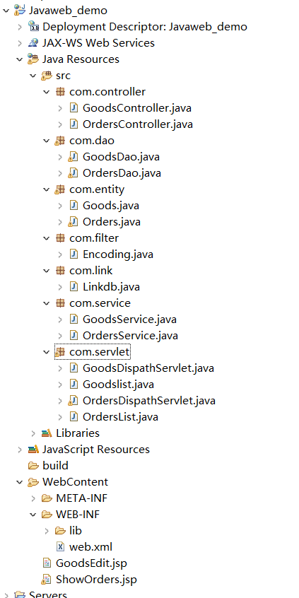
①.创建数据库,导入jar包：
1. 创建goods表，其中oid 字段对应 orders表的id：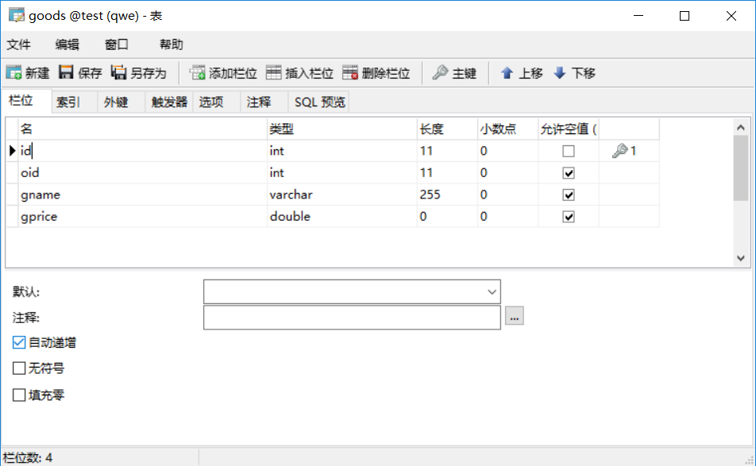
- 创建orders表（注意：order 是mysql 数据库的关键字，无法作为表名。）
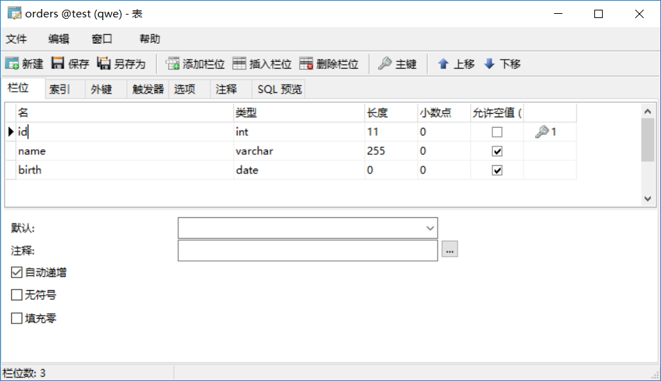
需要的jar包：
jstl-1.2.jar
mysql-connector-java-5.1.42-bin.jar
②.创建实体类bean：
package com.entity; public class Goods { private Integer id; private Integer oid; private String gname; private Double gprice; public Goods() {} public Goods(Integer id, Integer oid, String gname, Double gprice) { super(); this.id = id; this.oid = oid; this.gname = gname; this.gprice = gprice; } // get/set/toString 方法省略 }
package com.entity; import java.util.Date; import java.util.List; public class Orders { private Integer id; private String name; private Date birth; //Date 是日期类型 例如： 2017-12-18 private Goods goods; public Orders(){} public Orders(Integer id, String name, Date birth) { this.id = id; this.name = name; this.birth = birth; } public Orders(Integer id, String name, Date birth, Goods goods) { super(); this.id = id; this.name = name; this.birth = birth; this.goods = goods; } // get/set/toString 方法省略 }
③.创建与数据库的连接：
package com.link; import java.sql.Connection; import java.sql.DriverManager; import java.sql.SQLException; public class Linkdb { private static String url="jdbc:mysql://localhost:3306/test"; private static String username="root"; private static String password="root"; public static Connection getlinkDB(){ Connection conn=null; try { Class.forName("com.mysql.jdbc.Driver"); conn=DriverManager.getConnection(url, username, password); } catch (SQLException e) { System.out.println("link shibai"); }catch(ClassNotFoundException e){ System.out.println("link shibai22222"); }finally{ if(conn==null){ System.out.println("link shibai3333"); } } return conn; } }
④.Dao层(直接用实体类bean和 SQL语句来操作数据库)：
Goodsdao.java：
package com.dao; import java.sql.Connection; import java.sql.PreparedStatement; import java.sql.ResultSet; import java.sql.SQLException; import java.sql.Statement; import java.util.ArrayList; import java.util.Date; import java.util.List; import com.entity.Goods; import com.link.Linkdb; /* * 这里为 dao层 ，直接操作 实体类 和sql 语句来实现对数据的操作（增删改查） * * */ public class GoodsDao { private static Connection conn=Linkdb.getlinkDB(); //获取数据库连接 /** insert * @param name * @return * @throws SQLException */ public int insert(Goods g) throws SQLException{ String sql="insert into goods(oid, gname,gprice) values(?,?,?) "; PreparedStatement pstmt = conn.prepareStatement(sql); pstmt.setInt(1, g.getOid()); pstmt.setString(2,g.getGname()); pstmt.setDouble(3,g.getGprice()); int a = pstmt.executeUpdate(); if(a==0){ System.out.println("insert shibai "); } return a; } /** delete * @param id * @return * @throws SQLException */ public int delete(Integer id) throws SQLException{ String sql="delete from goods where id=?"; PreparedStatement pstmt = conn.prepareStatement(sql); pstmt.setInt(1,id); int a = pstmt.executeUpdate(); if(a==0){ System.out.println("delete shibai "); } return a; } /** deleteByOid * @param id * @return * @throws SQLException */ public int deleteByOid(Integer oid) throws SQLException{ String sql="delete from goods where oid=?"; PreparedStatement pstmt = conn.prepareStatement(sql); pstmt.setInt(1,oid); int a = pstmt.executeUpdate(); if(a==0){ System.out.println("deleteByOid shibai "); } return a; } /** update * @param id * @param name * @return * @throws SQLException */ public int update(Goods g) throws SQLException{ String sql="update goods set gname=? , gprice=? where id=?"; PreparedStatement pstmt = conn.prepareStatement(sql); pstmt.setString(1, g.getGname()); pstmt.setDouble(2,g.getGprice()); pstmt.setInt(3, g.getId()); int a = pstmt.executeUpdate(); if(a==0){ System.out.println("update shibai "); } return a; } /** selectone * @param id * @return * @throws SQLException */ public Goods selectone(Integer id) throws SQLException{ Goods goods=new Goods(); String sql="select * from goods where id=?"; PreparedStatement pstmt = conn.prepareStatement(sql); pstmt.setInt(1, id); ResultSet rs = pstmt.executeQuery(); while(rs.next()){ goods.setId(rs.getInt("id")); goods.setOid(rs.getInt("oid")); goods.setGname(rs.getString("gname")); goods.setGprice(rs.getDouble("gprice")); } return goods; } /** selectAll * @return * @throws SQLException */ public List<Goods> selectAll() throws SQLException{ List<Goods> listGoods=new ArrayList<Goods>(); String sql="select * from goods"; PreparedStatement pstmt = conn.prepareStatement(sql); ResultSet rs = pstmt.executeQuery(); while(rs.next()){ Goods ods=new Goods(rs.getInt("id"),rs.getInt("oid"),rs.getString("gname"),rs.getDouble("gprice")); listGoods.add(ods); } return listGoods; } /**查询某个订单下的全部商品 * @param oid * @return * @throws SQLException */ public List<Goods> selectByoid(Integer oid) throws SQLException { List<Goods> goodslist=new ArrayList<Goods>(); String sql="select * from goods where oid=?"; PreparedStatement pstmt = conn.prepareStatement(sql); pstmt.setInt(1, oid); ResultSet rs = pstmt.executeQuery(); while(rs.next()){ Goods goods=new Goods(); goods.setId(rs.getInt("id")); goods.setOid(rs.getInt("oid")); goods.setGname(rs.getString("gname")); goods.setGprice(rs.getDouble("gprice")); goodslist.add(goods); //把结果集的数据放到List<Goods> 中 } return goodslist; } /**通过id 查询某个表单下的商品 * @param id * @param oid * @return * @throws SQLException */ public Goods selectByoidAndid(Integer id, Integer oid) throws SQLException { Goods goods=new Goods(); String sql="select * from goods where oid=? and id=?"; PreparedStatement pstmt = conn.prepareStatement(sql); pstmt.setInt(1, oid); pstmt.setInt(2, id); ResultSet rs = pstmt.executeQuery(); while(rs.next()){ goods.setId(rs.getInt("id")); goods.setOid(rs.getInt("oid")); goods.setGname(rs.getString("gname")); goods.setGprice(rs.getDouble("gprice")); } return goods; } }
OrdersDao.java:
package com.dao; import java.sql.Connection; import java.sql.PreparedStatement; import java.sql.ResultSet; import java.sql.SQLException; import java.sql.Statement; import java.sql.Timestamp; import java.util.ArrayList; import java.util.Date; import java.util.List; import com.entity.Goods; import com.entity.Orders; import com.link.Linkdb; /* * 这里为 dao层 ，直接操作 实体类 和sql 语句来实现对数据的操作（增删改查） * * */ public class OrdersDao { private static Connection conn=Linkdb.getlinkDB(); //获取数据库连接 /** insert * * @param name * @return * @throws SQLException */ public int insert(Orders o) throws SQLException{ String sql="insert into orders(name, birth) values(?,?)"; PreparedStatement pstmt = conn.prepareStatement(sql); pstmt.setString(1,o.getName()); pstmt.setDate(2,(java.sql.Date) o.getBirth()); int a = pstmt.executeUpdate(); if(a==0){ System.out.println("insert shibai "); } return a; //返回insert orders表生成的主键id值 } /** delete * @param id * @return * @throws SQLException */ public int delete(Integer id) throws SQLException{ String sql="delete from orders where id=?"; PreparedStatement pstmt = conn.prepareStatement(sql); pstmt.setInt(1,id); int a = pstmt.executeUpdate(); if(a==0){ System.out.println("delete shibai "); } return a; } /** update * @param id * @param name * @return * @throws SQLException */ public int update(Orders o) throws SQLException{ String sql="update orders set name=? , birth=? where id=?"; PreparedStatement pstmt = conn.prepareStatement(sql); pstmt.setString(1,o.getName()); pstmt.setDate(2, (java.sql.Date) o.getBirth()); pstmt.setInt(3,o.getId()); int a = pstmt.executeUpdate(); if(a==0){ System.out.println("update shibai "); } return a; } /** selectone * @param id * @return * @throws SQLException */ public Orders selectone(Integer id) throws SQLException{ Orders orders=new Orders(); String sql="select * from orders where id=?"; PreparedStatement pstmt = conn.prepareStatement(sql); pstmt.setInt(1, id); ResultSet rs = pstmt.executeQuery(); while(rs.next()){ orders.setId(rs.getInt("id")); orders.setName(rs.getString("name")); orders.setBirth(rs.getDate("birth")); } return orders; } /** selectAll * @return * @throws SQLException */ public List<Orders> selectAll() throws SQLException{ List<Orders> listorders=new ArrayList<Orders>(); String sql="select * from orders"; PreparedStatement pstmt = conn.prepareStatement(sql); ResultSet rs = pstmt.executeQuery(); while(rs.next()){ Orders ods=new Orders(rs.getInt("id"),rs.getString("name"),rs.getDate("birth")); listorders.add(ods); } return listorders; } }
⑤：Service层（对Dao层的封装）：
GoodsService.java：
package com.service; import java.sql.SQLException; import java.util.List; import com.dao.GoodsDao; import com.entity.Goods; /* * 这里是 service 层，一般用于对dao 层的方法进行封装，因为有些操作需要多个 dao层的方法联合使用 * * */ public class GoodsService { GoodsDao goodsdao=new GoodsDao(); public int insert(Goods o) throws SQLException{ return goodsdao.insert(o); } public int delete(Integer id) throws SQLException{ return goodsdao.delete(id); } public int deleteByOid(Integer oid) throws SQLException{ return goodsdao.deleteByOid(oid); } public int update(Goods o) throws SQLException{ return goodsdao.update(o); } public Goods selectone(Integer id) throws SQLException{ return goodsdao.selectone(id); } public List<Goods> selectAll() throws SQLException{ return goodsdao.selectAll(); } public List<Goods> selectByoid(Integer oid) throws SQLException { return goodsdao.selectByoid(oid); } //通过id查询该订单表的商品,如果该订单表没有该id的商品，显示无。 public Goods selectByoidAndid(Integer id, Integer oid) throws SQLException { return goodsdao.selectByoidAndid(id,oid); } }
OrdersService.java:
package com.service; import java.sql.SQLException; import java.util.List; import com.dao.OrdersDao; import com.entity.Orders; /* * 这里是 service 层，一般用于对dao 层的方法进行封装，因为有些操作需要多个 dao层的方法联合使用 * * */ public class OrdersService { OrdersDao orderdao=new OrdersDao(); public int insert(Orders o) throws SQLException{ return orderdao.insert(o); } public int delete(Integer id) throws SQLException{ return orderdao.delete(id); } public int update(Orders o) throws SQLException{ return orderdao.update(o); } public Orders selectone(Integer id) throws SQLException{ return orderdao.selectone(id); } public List<Orders> selectAll() throws SQLException{ return orderdao.selectAll(); } }
⑥：Controller层（对Service层的封装）
GoodsController.java:
package com.controller; import java.sql.SQLException; import java.util.List; import com.entity.Goods; import com.service.GoodsService; /* * * 这里是 Controller 层，一般用于对service 层的方法进行封装，因为有些业务操作需要多个 service 层的方法联合使用。 * */ public class GoodsController { GoodsService goodsservice=new GoodsService(); public int insert(Goods o) throws SQLException{ return goodsservice.insert(o); } public int delete(Integer id) throws SQLException{ return goodsservice.delete(id); } public int deleteByOid(Integer oid) throws SQLException{ return goodsservice.deleteByOid(oid); } public int update(Goods o) throws SQLException{ return goodsservice.update(o); } public Goods selectone(Integer id) throws SQLException{ return goodsservice.selectone(id); } //查询该表单下的所有商品 public List<Goods> selectByoid(Integer oid) throws SQLException{ return goodsservice.selectByoid(oid); } //通过id查询该订单表的商品,如果该订单表没有该id的商品，显示无。 public Goods selectByoidAndid(Integer id,Integer oid) throws SQLException{ return goodsservice.selectByoidAndid(id,oid); } public List<Goods> selectAll() throws SQLException{ return goodsservice.selectAll(); } }
OrdersController.java:
package com.controller; import java.sql.SQLException; import java.util.List; import com.entity.Orders; import com.service.OrdersService; /* * * 这里是 Controller 层，一般用于对service 层的方法进行封装，因为有些业务操作需要多个 service 层的方法联合使用。 * */ public class OrdersController { OrdersService ordersservice=new OrdersService(); public int insert(Orders o) throws SQLException{ return ordersservice.insert(o); } public int delete(Integer id) throws SQLException{ return ordersservice.delete(id); } public int update(Orders o) throws SQLException{ return ordersservice.update(o); } public Orders selectone(Integer id) throws SQLException{ return ordersservice.selectone(id); } public List<Orders> selectAll() throws SQLException{ return ordersservice.selectAll(); } }
⑦：编写字符编码过滤器：
package com.filter; import java.io.IOException; import javax.servlet.Filter; import javax.servlet.FilterChain; import javax.servlet.FilterConfig; import javax.servlet.ServletException; import javax.servlet.ServletRequest; import javax.servlet.ServletResponse; import javax.servlet.annotation.WebFilter; /** /* 表示对每个请求都要进行过滤操作， @WebFilter("/*") 表示用注解的配置该过滤器的映射路径，这样可以不用在web.xml中使用xml标签进行映射路径的配置。 */ @WebFilter("/*") public class Encoding implements Filter { /* * 设置编码过滤器，对每个请求都进行编码设置，防止中文乱码 * */ public void doFilter(ServletRequest request, ServletResponse response, FilterChain chain) throws IOException, ServletException { request.setCharacterEncoding("utf-8"); //设置请求的字符编码变为utf-8 response.setContentType("text/html;charset=utf-8"); //设置响应的字符编码变为utf-8 chain.doFilter(request, response); } @Override public void destroy() { System.out.println("filter destory"); } @Override public void init(FilterConfig arg0) throws ServletException { System.out.println("filter init"); } }
⑧：编写Servlet文件：
注意：OrdersDispathServlet : 处理从ShowOrders.jsp 页面发送的请求(通过code值的不同，进行CRUD)。
OrdersList ： 处理从 OrdersDispathServlet 发送的请求（通过status值的不同，来决定是全查还是根据条件查询），并跳转到ShowOrders.jsp 页面。
GoodsDispathServlet ： 处理从GoodsEdit.jsp 页面发送的请求(通过code值的不同，进行CRUD)。
Goodslist ：处理从 GoodsDispathServlet 发送的请求（通过status值的不同，来决定是全查还是根据条件查询），并跳转到GoodsEdit.jsp 页面。
OrdersDispathServlet.java:
package com.servlet; import java.io.IOException; import java.io.PrintWriter; import java.sql.Date; import java.sql.SQLException; import java.sql.Timestamp; import javax.servlet.ServletException; import javax.servlet.annotation.WebServlet; import javax.servlet.http.HttpServlet; import javax.servlet.http.HttpServletRequest; import javax.servlet.http.HttpServletResponse; import org.apache.jasper.tagplugins.jstl.core.Out; import com.controller.GoodsController; import com.controller.OrdersController; import com.entity.Goods; import com.entity.Orders; /** * /OrdersDispathServlet ： 表示这个servlet的映射路径， 使用@WebServlet 可以省略在web.xml 上使用xml标签进行servlet的配置 */ @WebServlet("/OrdersDispathServlet") public class OrdersDispathServlet extends HttpServlet { private static final long serialVersionUID = 1L; /* * 该servlet 初步实现了对不同的请求进行不同的处理，主要通过code 来识别不同的请求 * */ protected void doGet(HttpServletRequest request, HttpServletResponse response) throws ServletException, IOException { int success=0; OrdersController ordersc=new OrdersController(); GoodsController goodsc=new GoodsController(); Integer code = Integer.valueOf(request.getParameter("code")); System.out.println("code "+code); /* code 1：insert 2:delete 3:update 4: 输入框有值式：selectone ，输入框无值时：selectAll * status 1：全查（有关联的 ） 2:单查（有关联的） * * success ：表示数据操作状态， 0： 表示插入失败，更新失败 ,删除失败 。 1：表示成功 * */ if(code==1) { Orders o=new Orders(); String name=request.getParameter("name"); Date birth=Date.valueOf(request.getParameter("birth")); o.setName(name); o.setBirth(birth); try { success=ordersc.insert(o); //insert orders表.返回1 表示insert成功 ，0表示失败 request.getRequestDispatcher("/OrdersList?status=1&success="+success).forward(request, response);//从该servlet 调用 另一个servlet，并传值status=1 } catch (SQLException e) { System.out.println("OrdersDispathServlet insert error"); } }else if(code==2) { Integer id=Integer.valueOf(request.getParameter("id")); try { /* * 根据id删除Orders表的数据，和与之关联的goods表的数据 * */ success=ordersc.delete(id); goodsc.deleteByOid(id); request.getRequestDispatcher("/OrdersList?status=1&success="+success).forward(request, response); } catch (SQLException e) { System.out.println("OrdersDispathServlet delete error"); } }else if(code==3) { Orders o=new Orders(); Integer id=Integer.valueOf(request.getParameter("id")); String name=request.getParameter("name"); Date birth=Date.valueOf(request.getParameter("birth")); o.setId(id); o.setName(name); o.setBirth(birth); try { success=ordersc.update(o); request.getRequestDispatcher("/OrdersList?status=1&success="+success).forward(request, response); } catch (SQLException e) { e.printStackTrace(); System.out.println("OrdersDispathServlet update error"); } }else if(code==4) { /* * code=4 表示查询，如果没有id值，表示全查，否则根据id查 * * */ String id=request.getParameter("id"); if(id.equals("")==true) { request.getRequestDispatcher("/OrdersList?status=1").forward(request, response); }else { request.getRequestDispatcher("/OrdersList?status=2&id="+id).forward(request, response); } } } protected void doPost(HttpServletRequest request, HttpServletResponse response) throws ServletException, IOException { doGet(request, response); } }
OrdersList.java:
package com.servlet; import java.io.IOException; import java.sql.SQLException; import java.util.ArrayList; import java.util.List; import javax.servlet.ServletException; import javax.servlet.annotation.WebServlet; import javax.servlet.http.HttpServlet; import javax.servlet.http.HttpServletRequest; import javax.servlet.http.HttpServletResponse; import com.controller.OrdersController; import com.entity.Orders; /** * 配置 @WebServlet(value="/OrdersList") ，就相当于在web.xml 文件配置该servlet。 映射路径为/OrdersList * */ @WebServlet(value="/OrdersList") public class OrdersList extends HttpServlet { private static final long serialVersionUID = 1L; protected void doGet(HttpServletRequest request, HttpServletResponse response) throws ServletException, IOException { List<Orders> orderslist=new ArrayList<Orders>(); OrdersController orderc=new OrdersController(); String status = request.getParameter("status"); String success=request.getParameter("success"); System.out.println("status : "+status+" success : "+success); /* * status 1：全查 2:单查 * success ：表示数据操作状态， 0： 表示插入失败，更新失败 ,删除失败 。 1：表示成功 * */ if(status.equals("1")) { try { orderslist = orderc.selectAll(); request.setAttribute("orderslist", orderslist); request.getRequestDispatcher("ShowOrders.jsp?success="+success).forward(request, response);//重定向到ShowOrders.jsp 页面，并把orderslist带回 } catch (SQLException e) { System.out.println("OrdersList servlet 全查 error"); } }else if(status.equals("2")) { Integer id=Integer.valueOf(request.getParameter("id")); try { Orders selectone = orderc.selectone(id); //单个查询返回的是Orders对象 orderslist.add(selectone); request.setAttribute("orderslist", orderslist); request.getRequestDispatcher("ShowOrders.jsp?success="+success).forward(request, response); } catch (SQLException e) { System.out.println("OrdersList servlet 单查 shibai "); } } } protected void doPost(HttpServletRequest request, HttpServletResponse response) throws ServletException, IOException { doGet(request, response); } }
GoodsDispathServlet.java:
package com.servlet; import java.io.IOException; import java.sql.SQLException; import javax.servlet.ServletException; import javax.servlet.annotation.WebServlet; import javax.servlet.http.HttpServlet; import javax.servlet.http.HttpServletRequest; import javax.servlet.http.HttpServletResponse; import com.controller.GoodsController; import com.entity.Goods; @WebServlet("/GoodsDispathServlet") public class GoodsDispathServlet extends HttpServlet { private static final long serialVersionUID = 1L; protected void doGet(HttpServletRequest request, HttpServletResponse response) throws ServletException, IOException { int success=0; GoodsController goodsc=new GoodsController(); Integer code=Integer.valueOf(request.getParameter("code")); Integer oid=Integer.valueOf(request.getParameter("oid")); System.out.println("code "+code+" oid "+oid); /* * code 1:insert 2:delete 3:update 4:输入框有值式：selectone ，输入框无值时：selectAll * status 1：全查 2:单查 * success ：表示数据操作状态， 0： 表示插入失败，更新失败 ,删除失败 。 1：表示成功 * * oid ： 表示商品表的订单id ,连接订单表与商品表的纽带。 * */ if(code==1) { String gname=request.getParameter("gname"); Double gprice=Double.valueOf(request.getParameter("gprice")); Goods good=new Goods(); good.setOid(oid); good.setGname(gname); good.setGprice(gprice); try { success=goodsc.insert(good); //insert goods表.返回1 表示insert成功 ，0表示失败 request.getRequestDispatcher("/Goodslist?status=1&oid="+oid+"&success="+success).forward(request, response); } catch (SQLException e) { System.out.println(" GoodsDispathServlet code=1 error "); } }else if(code==2) { Integer id=Integer.valueOf(request.getParameter("id")); try { success=goodsc.delete(id); request.getRequestDispatcher("/Goodslist?status=1&oid="+oid+"&success"+success).forward(request, response); } catch (SQLException e) { System.out.println(" GoodsDispathServlet code=2 error "); } }else if(code==3) { Integer id=Integer.valueOf(request.getParameter("id")); String gname=request.getParameter("gname"); Double gprice=Double.valueOf(request.getParameter("gprice")); Goods good=new Goods(); good.setId(id); good.setGname(gname); good.setGprice(gprice); try { success=goodsc.update(good); request.getRequestDispatcher("/Goodslist?status=1&oid="+oid+"&success="+success).forward(request, response); } catch (SQLException e) { System.out.println(" GoodsDispathServlet code=3 error "); } }else if(code==4) { String id=request.getParameter("id"); if(id=="") { request.getRequestDispatcher("/Goodslist?status=1&oid="+oid).forward(request, response); }else { Integer id2=Integer.valueOf(id); request.getRequestDispatcher("/Goodslist?status=2&id="+id2+"&oid="+oid).forward(request, response); } } } protected void doPost(HttpServletRequest request, HttpServletResponse response) throws ServletException, IOException { doGet(request, response); } }
Goodslist.java:
package com.servlet; import java.io.IOException; import java.sql.SQLException; import java.util.ArrayList; import java.util.List; import javax.servlet.ServletException; import javax.servlet.annotation.WebServlet; import javax.servlet.http.HttpServlet; import javax.servlet.http.HttpServletRequest; import javax.servlet.http.HttpServletResponse; import com.controller.GoodsController; import com.entity.Goods; /** * Servlet implementation class Goodslist */ @WebServlet("/Goodslist") public class Goodslist extends HttpServlet { private static final long serialVersionUID = 1L; protected void doGet(HttpServletRequest request, HttpServletResponse response) throws ServletException, IOException { GoodsController goodsc=new GoodsController(); List<Goods> goodslist =new ArrayList<Goods>(); String status=request.getParameter("status"); String success=request.getParameter("success"); System.out.println("status : "+status+" success: "+success); /* * status 1:查询该表单下的全部商品 2：通过id 查询该表单下的商品 * success ：表示数据操作状态， 0： 表示插入失败，更新失败 ,删除失败 。 1：表示成功 * oid ： 表示商品表的订单id ,连接订单表与商品表的纽带。 * */ if(status.equals("1")) { Integer oid=Integer.valueOf(request.getParameter("oid")); try { goodslist = goodsc.selectByoid(oid); request.setAttribute("goodslist", goodslist); request.getRequestDispatcher("GoodsEdit.jsp?oid="+oid+"&success="+success).forward(request, response); } catch (SQLException e) { System.out.println("Goodslist doGet error 111"); } }else if(status.equals("2")) { Integer id=Integer.valueOf(request.getParameter("id")); Integer oid=Integer.valueOf(request.getParameter("oid")); try { goodslist.add(goodsc.selectByoidAndid(id, oid)); request.setAttribute("goodslist", goodslist); request.getRequestDispatcher("GoodsEdit.jsp?oid="+oid+"&success="+success).forward(request, response); } catch (SQLException e) { System.out.println("Goodslist doGet error 222"); } } } protected void doPost(HttpServletRequest request, HttpServletResponse response) throws ServletException, IOException { doGet(request, response); } }
⑨：编写jsp：
ShowOrders.jsp:
<%@ page language="java" contentType="text/html; charset=UTF-8"
pageEncoding="UTF-8"%>
<%@ taglib uri="http://java.sun.com/jsp/jstl/core" prefix="c" %>
<!--使用jstl 标签 需要的配置-->
<!DOCTYPE html PUBLIC "-//W3C//DTD HTML 4.01 Transitional//EN" "http://www.w3.org/TR/html4/loose.dtd">
<html>
<head>
<meta http-equiv="Content-Type" content="text/html; charset=UTF-8">
<title>ShowOrders.jsp</title>
</head>
<body>
<table border="1">
<tr>
<th>序号</th>
<th>id</th>
<th>name</th>
<th>birth</th>
<th>Edit</th>
<th>Delete</th>
</tr>
<c:forEach items="${orderslist }" var="aa" varStatus="vst"> <!-- varStatus="vst" 该属性给遍历的数据设置序号， ${vst.count } 从1开始，逐次递增 -->
<tr>
<c:if test="${aa.id != null }">
<td>${vst.count }</td>
</c:if>
<c:if test="${aa.id == null }">
<script>alert("列表为空");</script>
</c:if>
<td>${aa.id }</td>
<td>${aa.name }</td>
<td>${aa.birth }</td>
<c:if test="${aa.id >0 }"> <!-- 当列表有数据时，才显示edit选项 -->
<td><a href="Goodslist?status=1&oid=${aa.id }">edit</a></td>
</c:if>
<c:if test="${aa.id >0 }"> <!-- 当列表有数据时，才显示delete选项 -->
<td><a href="OrdersDispathServlet?code=2&id=${aa.id }">delete</a></td>
</c:if>
</tr>
</c:forEach>
</table>
<br/>
insert
<form action="OrdersDispathServlet?code=1" method="post" onsubmit="return check(this)">
name:<input name="name" type="text"/>
birth:<input type="date" name="birth"/>
<input type="submit" value="submit"/>
</form>
<br/>
update(根据id更新)
<form action="OrdersDispathServlet?code=3" method="post" onsubmit="return check(this)">
id:<input type="text" name="id"/>
name:<input name="name" type="text"/>
birth:<input type="date" name="birth"/>
<input type="submit" value="submit" />
</form>
<br/>
selectone/selectAll(通过id查询。输入框为空，全查)
<form action="OrdersDispathServlet?code=4" method="post">
id:<input type="text" name="id"/>
<input type="submit" value="submit"/>
</form>
</body>
<script type="text/javascript">
//校验form表单的input 输入框是否为空
function check(form) {
if(form.id.value=='') {
alert("请输入用户id!");
form.id.focus();
return false;
}
if(form.name.value=='') {
alert("请输入用户姓名!");
form.name.focus();
return false;
}
if(form.birth.value==''){
alert("请输入日期!");
form.birth.focus();
return false;
}
return true;
}
// 通过Goodslist 这个servlet 传来的success 状态码 ，来判断当前操作 是否成功
<c:if test="${param.success == '1'}">
alert("操作成功");
</c:if>
<c:if test="${param.success == '0'}">
alert("操作失败");
</c:if>
</script>
</html>
GoodsEdit.jsp:
<%@ page language="java" contentType="text/html; charset=UTF-8"
pageEncoding="UTF-8"%>
<%@ taglib uri="http://java.sun.com/jsp/jstl/core" prefix="c" %>
<!--使用jstl 标签 需要的配置-->
<!DOCTYPE html PUBLIC "-//W3C//DTD HTML 4.01 Transitional//EN" "http://www.w3.org/TR/html4/loose.dtd">
<html>
<head>
<meta http-equiv="Content-Type" content="text/html; charset=UTF-8">
<title>GoodsEdit.jsp</title>
</head>
<body>
<table border="1">
<tr>
<th>序号</th>
<th>id</th>
<th>oid</th>
<th>gname</th>
<th>gprice</th>
<th>delete</th>
</tr>
<c:forEach items="${goodslist }" var="aa" varStatus="vst"> <!-- varStatus="vst" 该属性给遍历的数据设置序号， ${vst.count } 从1开始，逐次递增 -->
<tr>
<c:if test="${aa.id != null }">
<td>${vst.count }</td>
</c:if>
<c:if test="${aa.id == null }">
<script>alert("列表为空");</script>
</c:if>
<td>${aa.id }</td>
<td>${aa.oid }</td>
<td>${aa.gname }</td>
<td>${aa.gprice }</td>
<c:if test="${aa.id >0 }"> <!-- 当列表有数据时，才显示delete选项 -->
<td><a href="GoodsDispathServlet?code=2&id=${aa.id }&oid=${aa.oid}">delete</a></td>
</c:if>
</tr>
</c:forEach>
</table>
<br/>
insert
<form action="GoodsDispathServlet?code=1" method="post" onsubmit="return check(this)">
<input type="hidden" name="oid" value="${param.oid}"> <!-- type="hidden" 表示该input 框隐藏 -->
gname:<input type="text" name="gname"/>
gprice:<input type="text" name="gprice"/>
<input type="submit" value="submit"/>
</form>
<br/>
update(根据id修改)
<form action="GoodsDispathServlet?code=3" method="post" onsubmit="return check(this)">
id:<input type="text" name="id"/>
<input type="hidden" name="oid" value="${param.oid}">
gname:<input type="text" name="gname"/>
gprice:<input type="text" name="gprice"/>
<input type="submit" value="submit" />
</form>
<br/>
selectone/selectAll(输入框为空，根据oid查询该表单下的全部商品，否则根据id查该表单的商品)
<form action="GoodsDispathServlet?code=4" method="post">
id:<input type="text" name="id"/>
<input type="hidden" name="oid" value="${param.oid}">
<input type="submit" value="submit"/>
</form>
<br/>
<a href="ShowOrders.jsp">查看订单信息</a>
</body>
<script type="text/javascript">
//校验form表单的input 输入框是否为空
function check(form) {
if(form.id.value=='') {
alert("请输入商品id!");
form.id.focus();
return false;
}
if(form.gname.value=='') {
alert("请输入商品姓名!");
form.gname.focus();
return false;
}
if(form.gprice.value==''){
alert("请商品价格!");
form.gprice.focus();
return false;
}
return true;
}
// 通过Orderslist 这个servlet 传来的success 状态码 ，来判断当前操作 是否成功
<c:if test="${param.success == '1'}">
alert("操作成功");
</c:if>
<c:if test="${param.success == '0'}">
alert("操作失败");
</c:if>
</script>
</body>
</html>
⑩：运行截图：
订单编辑页面：
某个订单下的商品编辑页面：
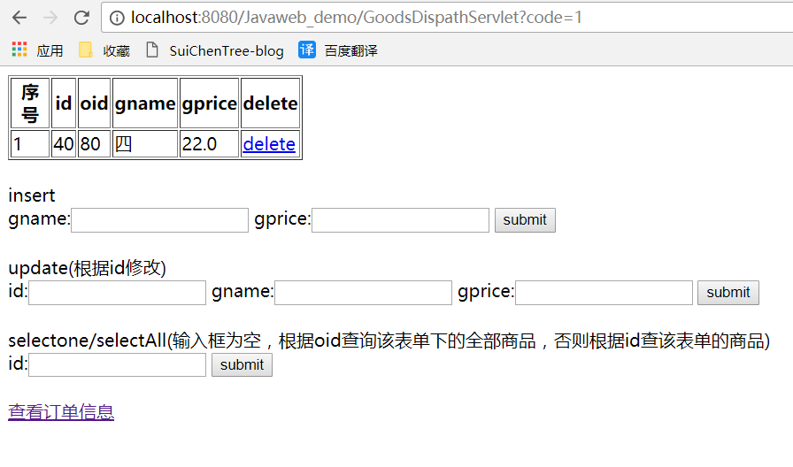
参考资料：
Java Web(一) Servlet详解！！- - 一杯凉茶 - 博客园
Java Web(一) Servlet过滤器详解！！- - 一杯凉茶 - 博客园
w3school